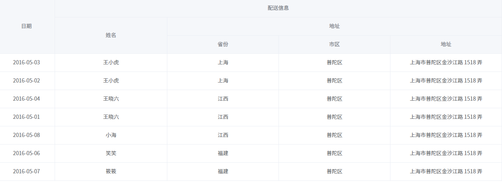
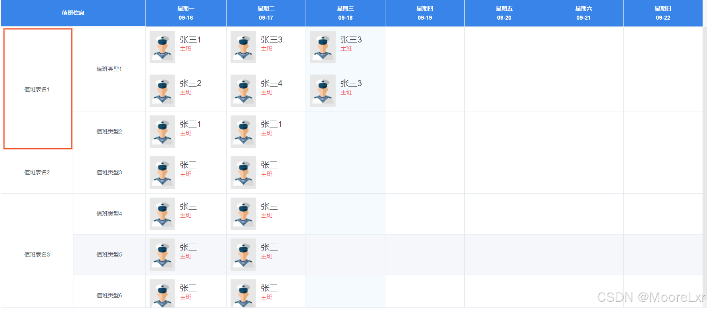
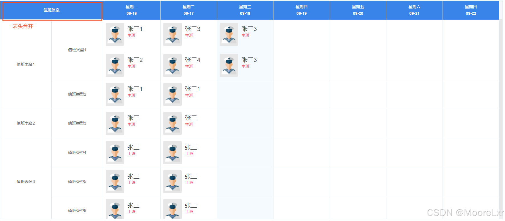
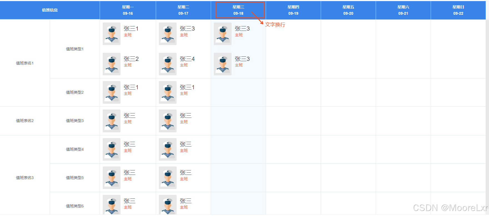

后台项目中经常会出现复杂表格的使用，以下列举几个常见表格的实现
# 一、多级表头
<el-table
:data="tableData"
border
style="width: 100%;"
:cell-style="{ 'text-align': 'center' }"
:header-cell-style="{ 'text-align': 'center' }"
>
<el-table-column
v-for="(col, i) in tableCols"
:label="col.label"
:prop="col.prop"
:key="i"
:width="col.width"
:show-overflow-tooltip="col.showOverflowTooltip"
:formatter="col.formatter && col.formatter"
>
<template v-if="col.children">
<el-table-column
v-for="(subCol, j) in col.children"
:label="subCol.label"
:prop="subCol.prop"
:key="j"
:formatter="subCol.formatter && subCol.formatter"
:class-name="col.className"
:width="subCol.width"
>
<template v-if="subCol.children">
<el-table-column
v-for="(item, h) in subCol.children"
:label="item.label"
:prop="item.prop"
:key="h"
:formatter="item.formatter && item.formatter"
:class-name="item.className"
:width="item.width"
></el-table-column>
</template>
</el-table-column>
</template>
</el-table-column>
</el-table>
<script>
export default {
name: 'complex-table',
data() {
return {
tableCols: [
{ label: '日期', prop: 'date', width: 150, rowspan: true },
{
label: '配送信息',
prop: 'shipingInfo',
rowspan: true,
children: [
{ label: '姓名', prop: 'name', rowspan: true },
{
label: '地址',
prop: 'addr',
rowspan: false,
children: [
{ label: '省份', prop: 'province', rowspan: false },
{ label: '市区', prop: 'city', rowspan: false },
{ label: '地址', prop: 'address', rowspan: false }
]
}
]
}
],
tableData: [
{ date: '2016-05-03', name: '王小虎', province: '上海', city: '普陀区', address: '上海市普陀区金沙江路 1518 弄'},
{ date: '2016-05-02', name: '王小虎', province: '上海', city: '普陀区', address: '上海市普陀区金沙江路 1518 弄'},
{ date: '2016-05-04', name: '王晓六', province: '江西', city: '普陀区', address: '上海市普陀区金沙江路 1518 弄'},
{ date: '2016-05-01', name: '王晓六', province: '江西', city: '普陀区', address: '上海市普陀区金沙江路 1518 弄'},
{ date: '2016-05-08', name: '小海', province: '江西', city: '普陀区', address: '上海市普陀区金沙江路 1518 弄'},
{ date: '2016-05-06', name: '笑笑', province: '福建', city: '普陀区', address: '上海市普陀区金沙江路 1518 弄'},
{ date: '2016-05-07', name: '筱筱', province: '福建', city: '普陀区', address: '上海市普陀区金沙江路 1518 弄'}
]
}
}
}
</script>
展示效果：

# 二、合并行
<el-table
:data="tableData"
border
:span-method="objectSpanMethod"
>
<el-table-column prop="weekday1" label="周一" width="180" align="center"></el-table-column>
<el-table-column prop="weekday2" label="周二" width="180" align="center"></el-table-column>
<el-table-column prop="weekday3" label="周三" width="180" align="center"></el-table-column>
<el-table-column prop="weekday4" label="周四" width="180" align="center"></el-table-column>
<el-table-column prop="weekday5" label="周五" width="180" align="center"></el-table-column>
<el-table-column prop="weekday6" label="周六" width="180" align="center"></el-table-column>
<el-table-column prop="weekday7" label="周日" width="180" align="center"></el-table-column>
</el-table>
<script>
export default {
data() {
return {
tableData: [
{
rotaId: 'xxx-1',
rotaName: '值班表名1',
dutyTypeId: "type0001",
dutyTypeName: "值班类型1",
'2024-09-16': [],
'2024-09-17': [],
'2024-09-18': [],
'2024-09-19': [],
'2024-09-20': [],
'2024-09-21': [],
'2024-09-22': []
},
{
rotaId: 'xxx-1',
rotaName: '值班表名1',
dutyTypeId: "type0002",
dutyTypeName: "值班类型2",
'2024-09-16': [],
'2024-09-17': [],
'2024-09-18': [],
'2024-09-19': [],
'2024-09-20': [],
'2024-09-21': [],
'2024-09-22': []
},
{
rotaId: 'xxx-2',
rotaName: '值班表名2',
dutyTypeId: "type0003",
dutyTypeName: "值班类型3",
'2024-09-16': [],
'2024-09-17': [],
'2024-09-18': [],
'2024-09-19': [],
'2024-09-20': [],
'2024-09-21': [],
'2024-09-22': []
}
]
}
},
methods: {
// 行合并方法
objectSpanMethod ({ row, column, rowIndex, columnIndex }) {
const dataProvider = this.tableData
const cellValue = row[column.property]
if (cellValue || cellValue===0) {
let prevRow = dataProvider[rowIndex - 1] // 上一条数据
let nextRow = dataProvider[rowIndex + 1] // 下一条数据
// 当上一条数据等于下一条数据
if (prevRow && prevRow[column.property] === cellValue) {
return { rowspan: 0, colspan: 0 }
} else {
let rowspan = 1
while (nextRow && nextRow[column.property] === cellValue) {
rowspan++
nextRow = dataProvider[rowspan + rowIndex]
}
if (rowspan > 1) return { rowspan, colspan: 1 }
}
}
}
}
}
</script>
展示效果：

# 三、合并表头
<el-table
:data="tableData"
:span-method="objectSpanMethod"
:header-cell-style="headRowStyle"
height="calc(100% - 90px)"
border
>
<!-- 合并前两列的表头 -->
<el-table-column align="center" label="值班信息">
<el-table-column prop="rotaName" width="180" align="center"></el-table-column>
<el-table-column prop="dutyTypeName" width="180" align="center"></el-table-column>
</el-table-column>
<el-table-column prop="weekday1" label="周一" width="180" align="center"></el-table-column>
<el-table-column prop="weekday2" label="周二" width="180" align="center"></el-table-column>
<el-table-column prop="weekday3" label="周三" width="180" align="center"></el-table-column>
<el-table-column prop="weekday4" label="周四" width="180" align="center"></el-table-column>
<el-table-column prop="weekday5" label="周五" width="180" align="center"></el-table-column>
<el-table-column prop="weekday6" label="周六" width="180" align="center"></el-table-column>
<el-table-column prop="weekday7" label="周日" width="180" align="center"></el-table-column>
</el-table>
// 表头合并的方法
headRowStyle({ row, colunm, rowIndex, columnIndex }) {
if (rowIndex === 1) {
//这里为了是将第二列的表头隐藏，就形成了合并表头的效果
return { display: 'none' }
}
return "background:#f5f7fa"
},
展示效果：

# 四、表头文字换行
<el-table
:data="tableData"
height="calc(100% - 90px)"
border
>
<!-- 加上\n可实现换行 -->
<el-table-column prop="weekday1" label="周一\n09-16" width="180" align="center"></el-table-column>
<el-table-column prop="weekday2" label="周二\n09-17" width="180" align="center"></el-table-column>
<el-table-column prop="weekday3" label="周三\n09-18" width="180" align="center"></el-table-column>
<el-table-column prop="weekday4" label="周四\n09-19" width="180" align="center"></el-table-column>
<el-table-column prop="weekday5" label="周五\n09-20" width="180" align="center"></el-table-column>
<el-table-column prop="weekday6" label="周六\n09-21" width="180" align="center"></el-table-column>
<el-table-column prop="weekday7" label="周日\n09-22" width="180" align="center"></el-table-column>
</el-table>
/*表头换行 加这段css代码*/
::v-deep .el-table th.el-table__cell > .cell {
white-space: pre;
}
展示效果：
